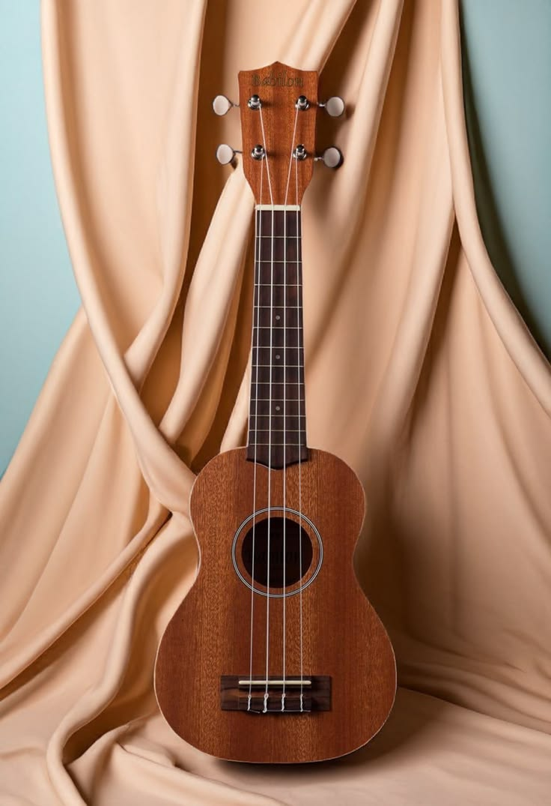
Ukulele
Alat musik petik yang populer di Hawaii. Ukulele umumnya memiliki empat senar dan dimainkan dengan cara dipetik atau dikentrung. Saya biasanya menggunakan tuning GCEA.
biasa dipanggil Soffel (SMP) dan Ncop (Pondok). Saya seorang Ceraunophile dan Nyctophile yang suka menikmati langit malam, gemericik air, kilatan petir, tiupan angin, serta suasana yang tenang dan sunyi.
17
Umur
1
Anak ke-
SMK
Pendidikan
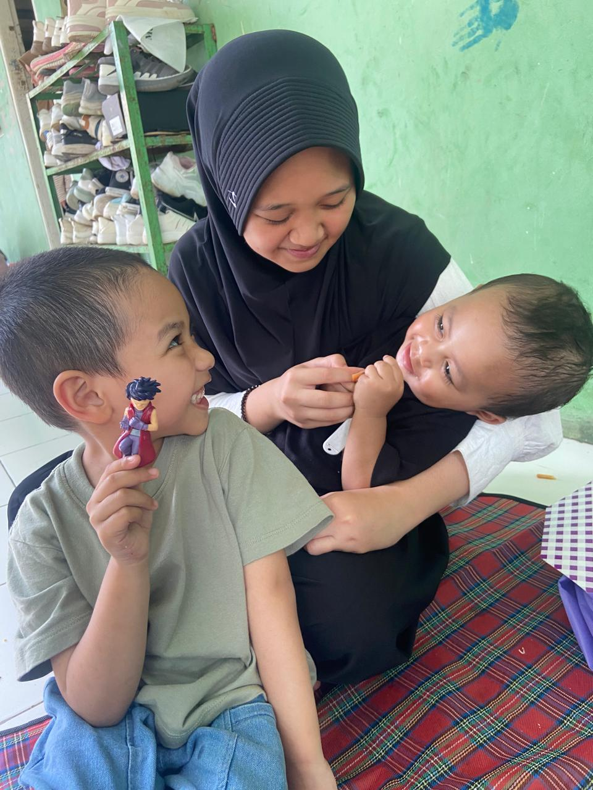
Hobi

Alat musik petik yang populer di Hawaii. Ukulele umumnya memiliki empat senar dan dimainkan dengan cara dipetik atau dikentrung. Saya biasanya menggunakan tuning GCEA.
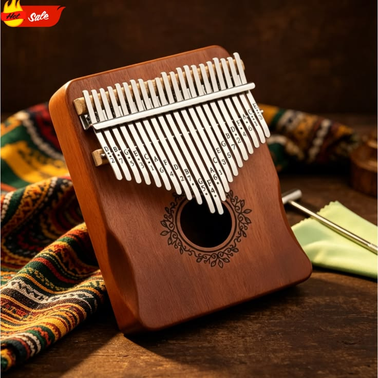
Menurut saya, memainkan kalimba terasa seperti memainkan piano versi mini karena menghasilkan suara yang lembut dan menenangkan.
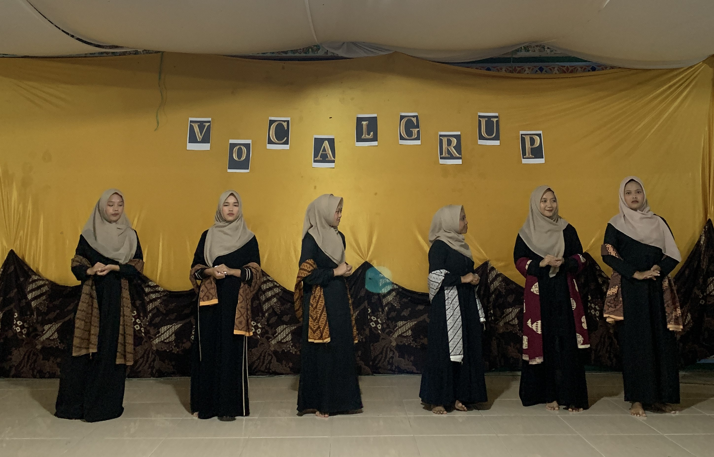
Saya gemar bernyanyi, namun karena kurang percaya diri untuk tampil solo, saya lebih menyukai paduan suara karena melatih kekompakan, fokus, dan keserasian suara.
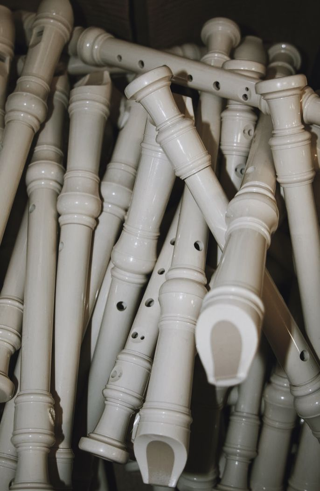
Alat musik tiup yang bentuknya menyerupai suling, tetapi memiliki teknik permainan yang berbeda serta menghasilkan suara yang merdu.
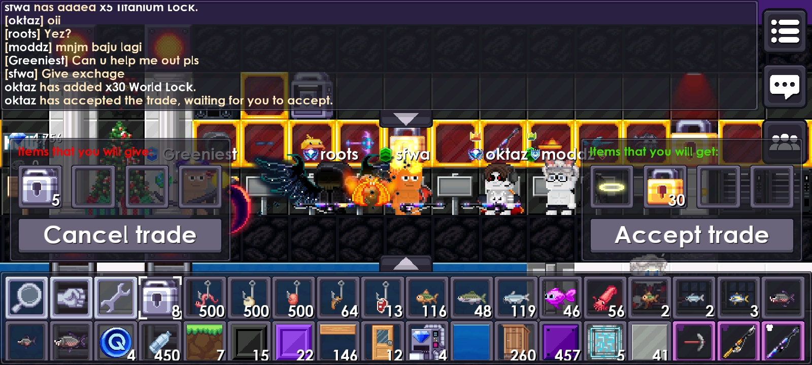
Saya sangat suka dan sering memaikan game pixel, seperti PixelWorlds dan Breaworlds, selain itu saya juga memainkan game strategi seperti Mobile Legend dan Clash of Clans
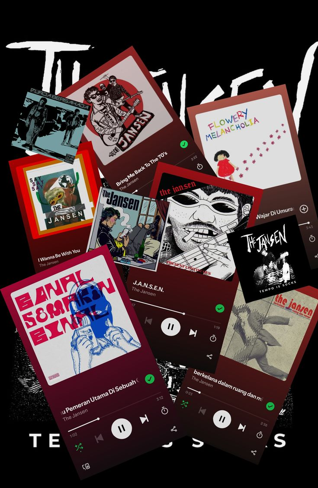
Saya sangat menyukai musik dengan berbagai genre, mulai dari pop punk, balada, lagu Jawa, hingga lagu lawas karya Ebiet G. Ade, Rinto Harahap, dan Iwan Fals. Selain itu saya sangat juga suka nadzoman sunda
Portofolio
Pembelajaran Internet of Things (IoT) menggunakan Arduino Uno dan Tinkercad sebagai media simulasi serta perancangan rangkaian.
Pembelajaran desain grafis menggunakan Adobe Illustrator dan Adobe Photoshop untuk membuat berbagai karya visual.
Website portofolio pertama saya. Melalui proyek ini, saya belajar membuat website toko kopi sederhana dengan referensi dari channel Web Programming UNPAS.
Membuat model 3D es krim sederhana menggunakan Blender sebagai latihan dasar pemodelan 3D.
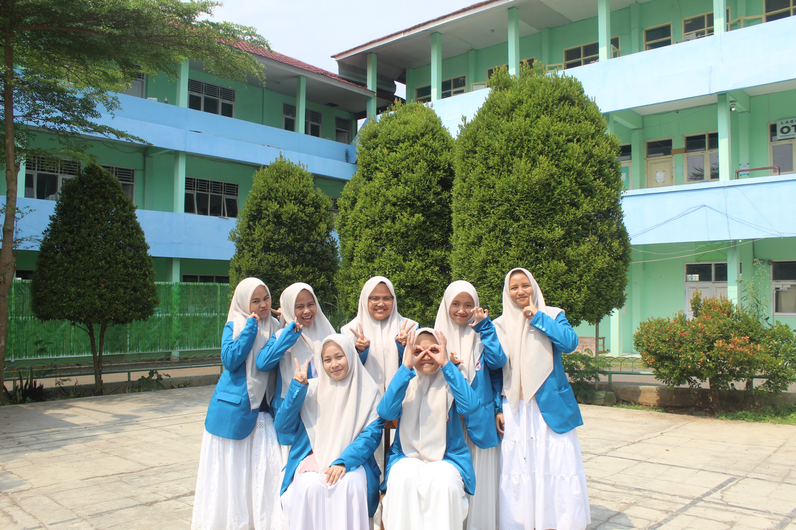
Tentang Saya
Saya Sofwatunida, ditulis tanpa spasi.
Saya merupakan anak pertama dari tiga bersaudara yang lahir di Puncak, Bogor, pada 8 Februari 2009. Saat ini saya menempuh pendidikan di Pondok Pesantren Al-Ittihad. Di sana saya dipercaya menjadi pengurus pondok pada divisi Ta'mirul Qoah serta aktif mengikuti beberapa kegiatan ekstrakurikuler. Selain itu saya senang mencoba hal-hal baru, terutama yang berkaitan dengan teknologi, seni, dan musik.
Ekstrakurikuler
Paduan Suara
"Sedari SMP saya suka paduan suara dan vocal group dan pernah meraih juara 2 paduan suara dengan membawakan lagu tradisional Gambang Suling dan Mars YPLP saat SMP"
Angklung
"Saya menyukai angklung sejak TK hingga sekarang. Sama seperti paduan suara, permainan angklung membutuhkan kerja sama tim dan fokus terhadap nada masing-masing."
Drum Band
"Saya sangat aktif pada eskul ini terutama di SMP, saya pernah menjadi bell, pianika, bendera, dan snare. Di SMK, saya memiliki keinginan untuk mencoba memainkan trio tom."
Pengalaman
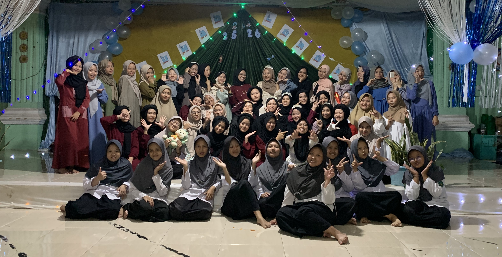
Pada kelas 10 semester 1, saya menjadi mentor bahasa. Kegiatan ini membantu saya memperdalam kemampuan berbahasa sekaligus melatih keberanian berbicara di depan banyak orang.
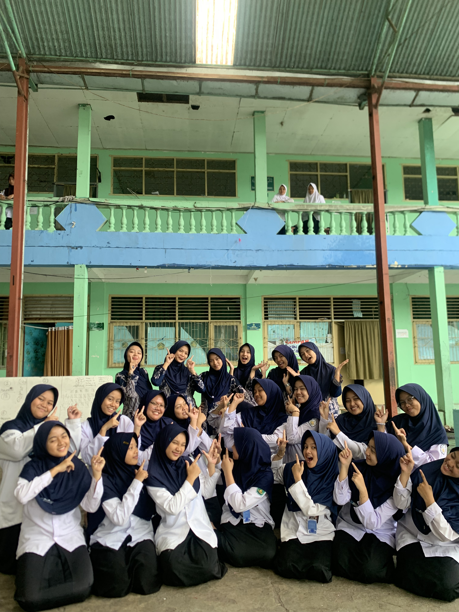
Saya ingin melatih kemampuan berbicara dan kepercayaan diri di depan banyak orang.
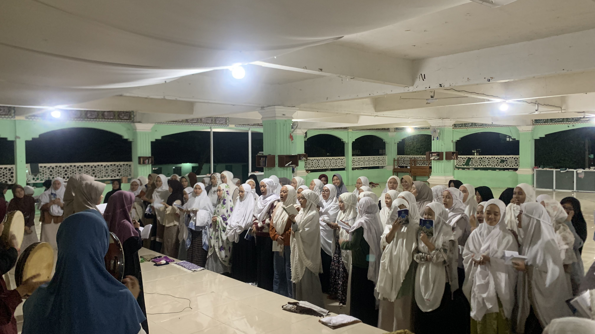
Memimpin pelaksanaan solat dan mengaji Al=Qur'an, melaksanakan tarbiyatul ahlak (TA), mengurusi ketertiban pelaksanaan ibadah, kesucian dan kebersihan tempat ibadah
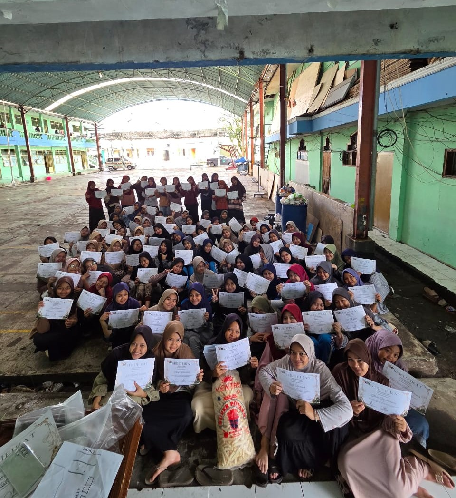
Membimbing adik kelas/ teman seangkatan di kamar, mengatur kebersihan, kerapihan, kedisiplinan, pemakaian bahasa dan evaluasi kamar
Kenali lebih dekat dengan
Jika ada hal yang ingin didiskusikan, jangan ragu untuk menghubungi saya dengan 'klik' salah satu platform di bawah ini.